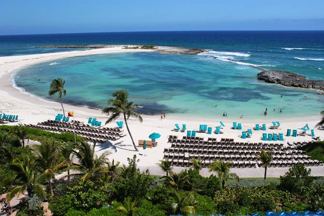
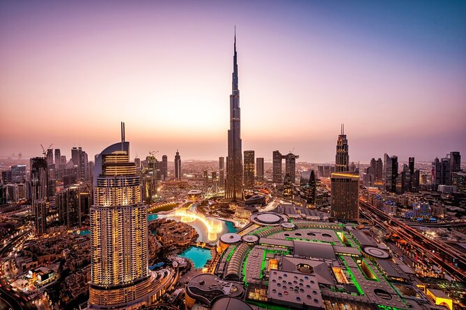
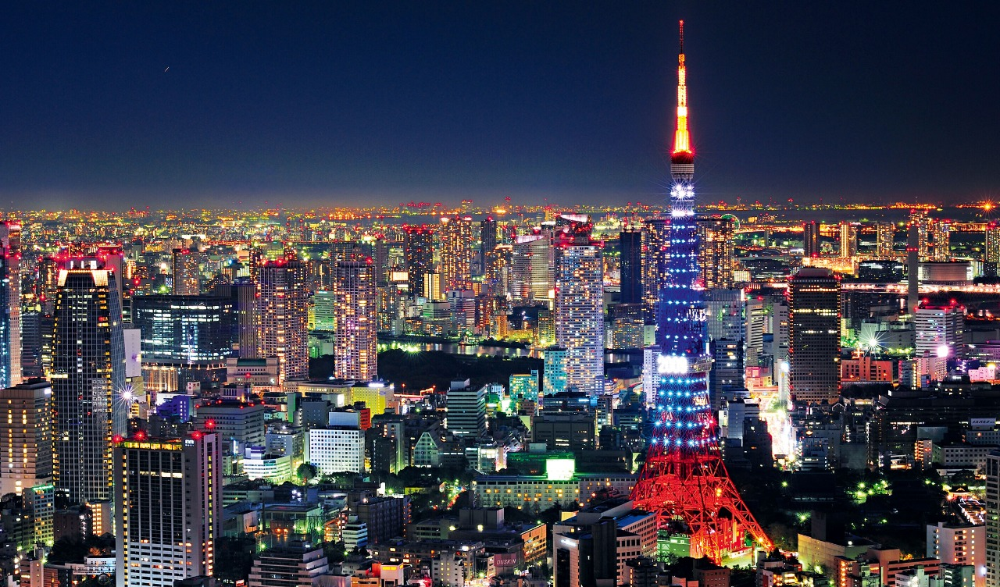
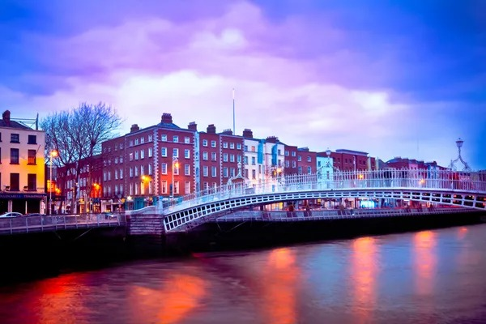
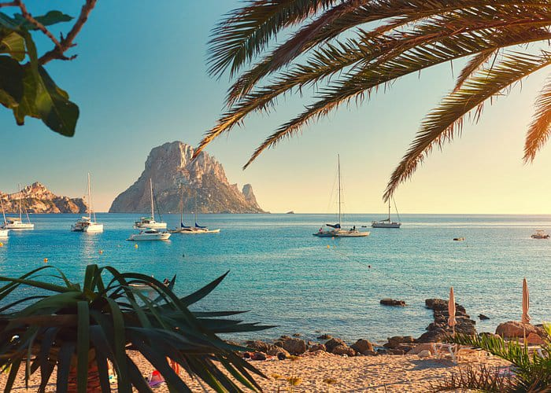
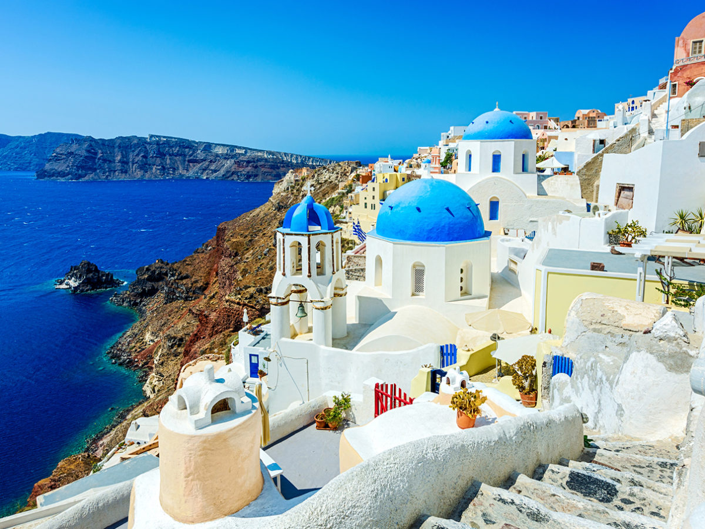

Américas
- 
Bahamas é um país da América Central formado por cerca de 700 ilhas no Oceano Atlântico. As belas paisagens naturais das ilhas, aliadas ao clima quente, atraem milhões de turistas ao país.

Hollywood é um distrito da cidade de Los Angeles, na Califórnia. Você pode visitar o letreiro, além da Walk Of Fame, um enorme calçadão com os principais nomes do cinema, artes e música do mundo.

Ótimo lugar para passeios, existem dois pontos turísticos essenciais para conhecer em Nova York, Estátua da Liberdade, que fica em Liberty Island. E Times Square, é um encontro da Broadway com a Sétima Avenida.
Peru é uma caixinha de surpresas. É um país de belezas naturais exuberantes, lindas montanhas da Cordilheira dos Andes, gastronomia de excelente qualidade em Lima e sítios arqueológicos únicos como o Machu Picchu.
Ásia
A única ilha da Indonésia é o lugar perfeito para se desligar do ritmo acelerado da vida urbana e descansar. A ilha tem belos campos de arroz, paisagens bucólicas, praias e uma cultura exótica, ou seja, é realmente uma experiência inesquecível.
- 
Dubai é a maior cidade dos Emirados Árabes Unidos, conhecida pelos shoppings de luxo, pela arquitetura ultramoderna. Uma atração turísticas bastante conhecida de Dubai é o Burj Khalifa.
- 
Exemplo no modelo de organização e modernidade, o país é dotado de infinitas belezas naturais e arquitetônicas. Pessoas educadas e sorridentes que estão sempre prontas para te receber, sem falar na comida hein!.
Europa
;
- 
A capital da Irlanda é uma metrópole culturalmente vibrante, com seu passado cheio de história, mas que não deixou de evoluir com o passar do tempo, com tradições e espírito jovial que conquista o visitante desde o primeiro momento.
- 
A cidade de Ibiza, Espanha, é uma das ilhas Baleares. Conhecida por ser um destino praiano com uma ótima infraestrutura turística, belas praias e festas regadas de músicas.
- 
É na capital, Atenas, que o visitante poderá conhecer de perto a Acrópole mais famosa do mundo. Além disso, não podem deixar de incluir no roteiro as paradisíacas ilhas gregas, a exemplo de Mykonos, Santorini e Creta.
África